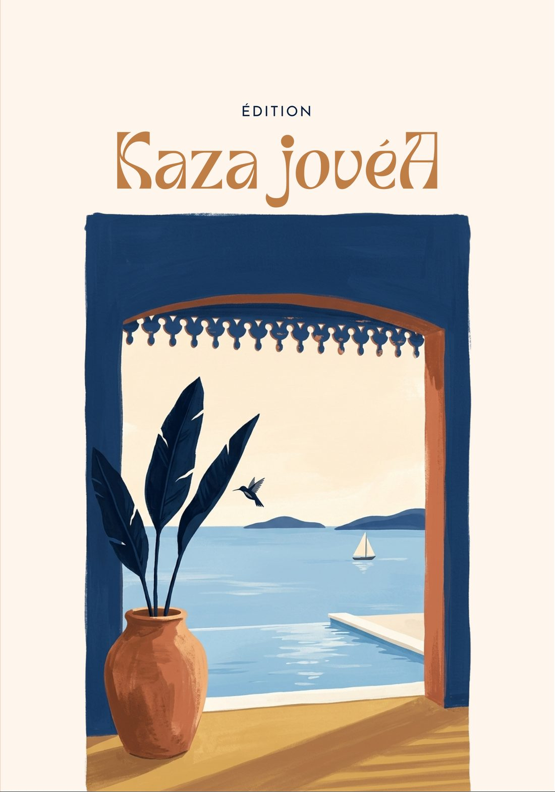
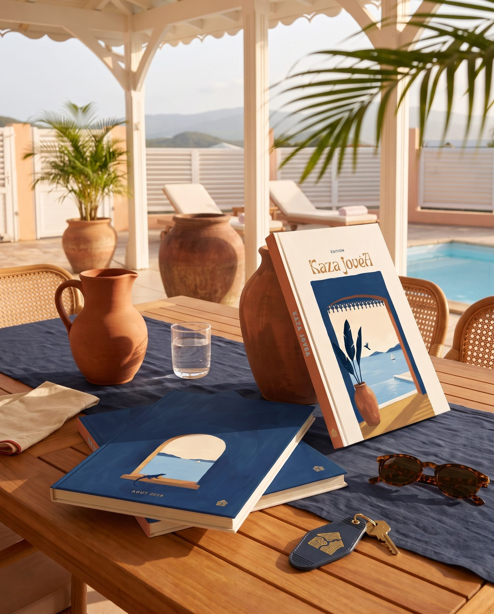
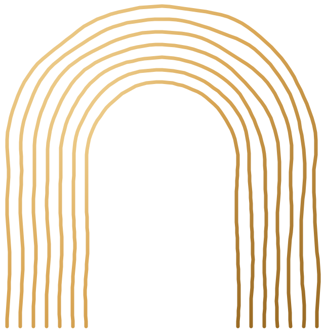
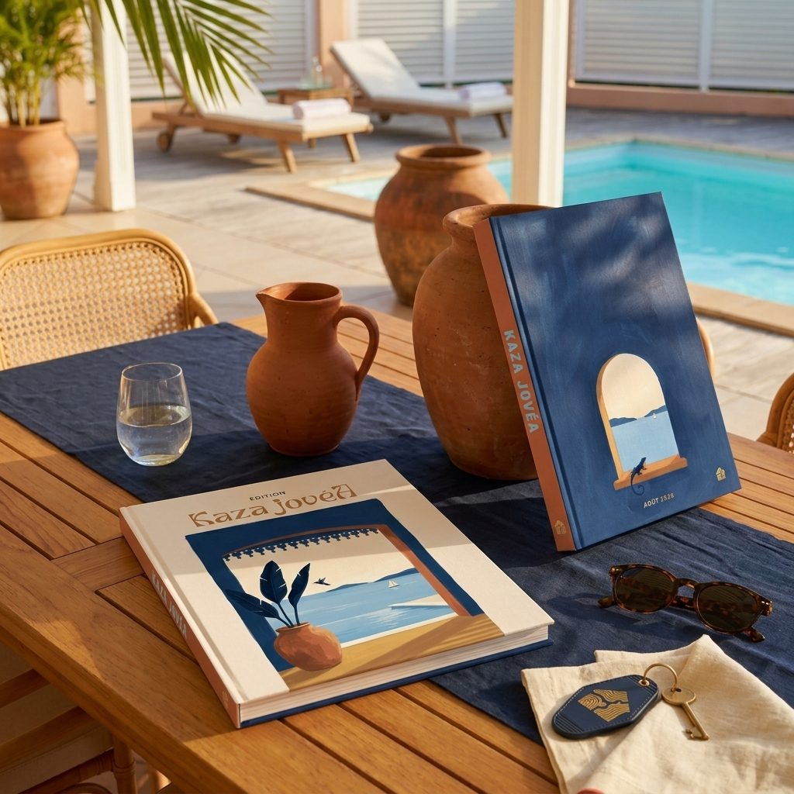
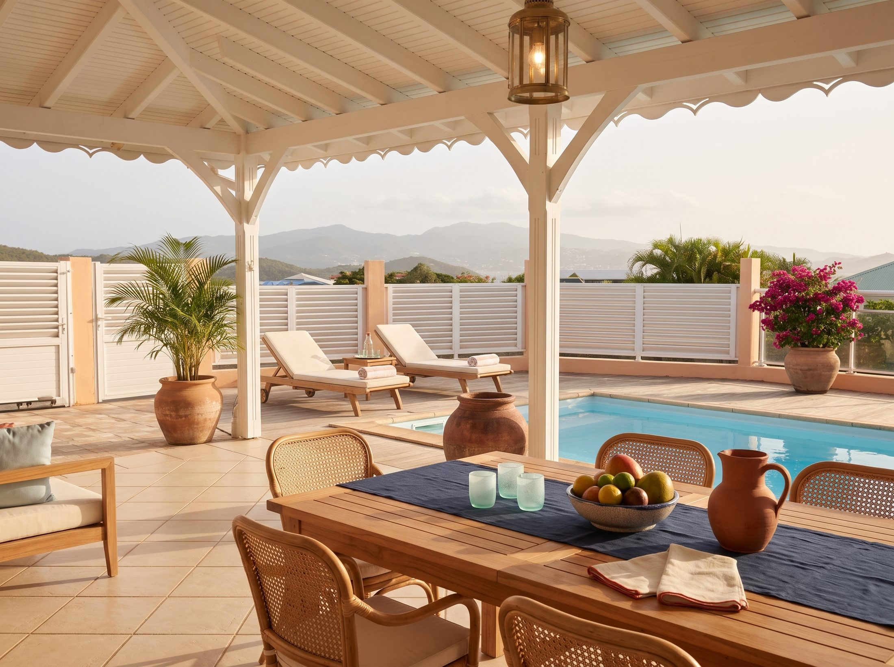
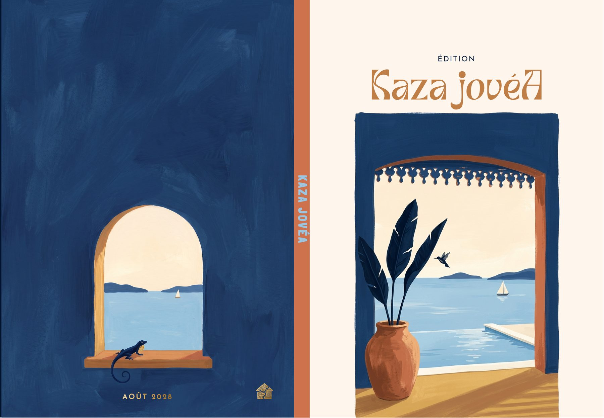
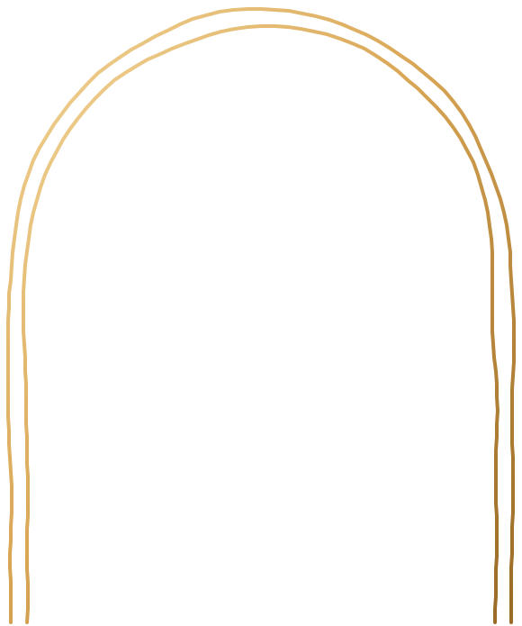

{{ch.num}}
{{ch.title}}
{{ch.chapo}}
- {{pt}}
{{p.label}}
Proposition éditoriale — Livret d'accueil
Un livret d'accueil, c'est la voix de la maison quand vous n'êtes pas là. Voici celui que vous avez imaginé, chapitre par chapitre, et ce que nous vous proposons d'y ajouter.

RETENUE

L'objet
Posé sur la table de la varangue, ouvert à la bonne page.
Un livre que l'on feuillette au petit-déjeuner et que l'on garde à portée de main tout le séjour. Sa version en ligne, elle, se glisse dans la poche et reste toujours à jour.

Fig. 2 et 3
Mises en scène
sous la varangue
Chapitre premier — Vos demandes
Tout ce que vous souhaitez transmettre à vos invités, mis en ordre. Ces chapitres sont acquis : ils forment le cœur du livret.
Ce carnet est celui de la Villa. Le Bungalow aura le sien, plus tard.
{{ch.chapo}}

Chapitre deux — Nos conseils
Vos chapitres racontent le plaisir du séjour. Ceux-ci en assurent la sérénité. Touchez une page pour l'ajouter au livret, touchez-la encore pour la retirer.
{{nbAddedPad}}/ {{nbReco}} retenues
{{tier.kick}}
{{tier.line}}
Chapitre trois — Le format

Notre conseil : le bel objet imprimé pour l'accueil, et sa version en ligne pour tout ce qui change (code wifi, horaires, numéros), mise à jour sans réimprimer.
Le français est la langue du livret. Une part de vos invités vient de l'étranger : nous vous conseillons d'y joindre l'anglais.

Chapitre quatre — Votre sommaire
Il ne reste qu'à nous l'envoyer.
Ce sommaire servira de base à la rédaction et au devis. Ajoutez une remarque si besoin, puis envoyez-nous votre sélection directement sur WhatsApp : le message est déjà rédigé.
Support : {{supportLabel}}
Langues : {{langsLabel}}
{{copyMsg}}